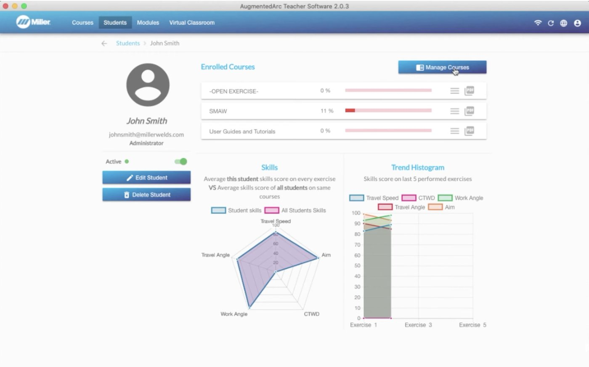

Unit objective
Using your completed alignment table, develop an AR-to-live-welding integration plan for one course in one upcoming term, completing every section of the plan template.
Select the information icon after a term for a short definition. All terms are in the Glossary.
Consistency: a schedule and a log
Consistency is the key to an integration plan. A simulator helps a program when every learner uses it on a regular schedule, not when it is used whenever a booth happens to be full.
Schedule every learner
Plan regularly scheduled simulator time for each learner: how often, and for how long. A schedule that every student can count on is what lets practice build from one session to the next.
Keep a report log for each student
Keep a current log of each student’s simulator work. The log gives you a visual record of the student’s progress, and it is what you will read when you decide whether a student is ready for the booth. In Unit 2 you saw the student record in the Teacher SoftwareGlossary: Teacher Software: every attempt, with its date and time and a pass or fail mark. The software can also produce reports across a course.
In brief
The Teacher Software can generate reports from its courses and students tabs, including a course list report, a course global report, a student course average report, and a histogram report. These are the raw material for a progress log.
Read the transcript
The player starts at 2:57. Transcript cleaned from YouTube’s captions and checked against the audio.
2:57 Reports. The Teacher Software can generate different reports that can be accessed from the courses and students tabs. Some of them are course lists report, course global report, student course average report, histogram report. [On screen: examples of report screens, no narration.]
3:52 [Music] And many more.
4:12 For additional information on setting up your AugmentedArc welding training system, see your owner’s manual or visit millerwelds.com.
In brief
Each student has an overview page in the Teacher Software. It lists the courses the student is enrolled in, with their progress in each, and a statistical analysis of their skills. Manage Courses adds or removes the student from courses. The rest of the video covers creating student and instructor profiles.
Read the transcript
The player starts at 1:32. The full transcript is below. Transcript cleaned from YouTube’s captions; audio check pending.
0:01 Student and instructor profiles. By the end of this video, you will be able to create a student profile, enroll a student to a course, navigate the student overview page, create an instructor profile.
0:16 On the navigation header, click on Students. A list of existing students is displayed in the middle of the screen. Select All Courses in the course filter to display all of the students.
0:37 Let’s start by adding a student. Click New Student. The fields marked in red are mandatory: first name, last name, laterality, and simulator password code, which must be a four-digit password and between the numbers one to four.
0:59 All other fields are optional; however, to access the students software, an email address will be required. Check the admin box only if you want the user or student to have access in the simulator to the system settings, where critical configurations can be made.
1:21 After you click Continue, you have the option to select the course or courses to which the student will be enrolled in.
1:32 Double-click on a student to view the student overview, which shows the list of enrolled courses with the associated progress and statistical analysis for their skills. Select Manage Courses to add or remove the student from the list of available courses.
1:55 Now, to add an instructor profile to use the Teacher Software, click on Account and Settings on the navigation header, Manage Accounts, and then click on New Instructor. In this case, all fields are required.
2:17 An instructor user profile is only for the use with the Teacher Software, and it helps instructors within the same institution to keep their content organized and not overlapping each other’s content. An instructor user profile does not have access in the simulator.
2:36 For additional information on setting up your AugmentedArc welding training system, see your owner’s manual or visit millerwelds.com.
Try it
Which schedule is consistent?
Demonstrations at each switch
When students switch to a new process or a new simulated position, perform a basic demonstration first. The simulator’s guides coach the student during a weld, but they do not replace the instructor showing what the new process or position looks like.
A switch changes the setup and the body position the student has been practicing. A short demonstration at that point lets students see the change before they try it, instead of finding it through failed attempts.
Try it
Demonstration first?
Does each of these call for a basic demonstration before students practice?
Ready for the booth
The student’s report log tells you when they are ready for the booth. Look for steady consistency, not a single good score.
A rule of thumb: a student is typically ready to move from the simulator to the booth when their last 3 to 5 sessions show consistent overall scores that meet the exercise target, with no technique parameter flagged in red across those sessions.

This is where Unit 2 comes back. The overall score can hide a parameter in red, so read past it, and look across attempts for a pattern. One high score can be a good day. Three to five consistent sessions are a habit.
Try it
Who is ready?
Three students’ last five sessions on the same exercise. The target overall score is 90. These records are made up.
| Student | 1 | 2 | 3 | 4 | 5 | Red parameters |
|---|---|---|---|---|---|---|
| Student A | 91 | 93 | 92 | 94 | 93 | None |
| Student B | 97 | 82 | 95 | 86 | 96 | CTWD in sessions 2 and 4 |
| Student C | 94 | 95 | 93 | 94 | 95 | Travel angle in sessions 3, 4, and 5 |
The re-orientation phase
The first live sessions after the simulator are the re-orientation phaseGlossary: Re-orientation phase. Students typically need one to three sessions to get used to the heat and smoke of the welding booth. Plan for it, so a dip in performance is expected rather than a surprise.
Breaks, and each other
- Encourage small, frequent breaks during this first phase of moving from simulator to steel.
- Expect frustration. It is a natural part of the transition.
- Use short breathers between sessions, and let students talk with their classmates and share what they are struggling with. Hearing that others find it hard too is a good way through.
The aim is to replace frustration and anxiety with relaxation and enthusiasm, so students keep the confidence they built on the simulator.
Try it
After a rough first bead
A student who did well on the simulator lays a rough first bead in the booth, lifts the helmet, and says, “I can’t do this for real.” What do you say or do? One or two sentences.
Check your response
- Does it treat the frustration as normal for this phase?
- Does it offer a short break?
- Does it connect the student back to what they practiced, or to classmates going through the same thing?
Model response: “That’s normal. Everyone’s first few beads with real heat and smoke feel like this. Take five, talk to the others about how theirs went, then we’ll run it again with the same moves you had down on the simulator.”
Building your plan
Your Integration Plan covers one course in one upcoming term. It starts from your Unit 3 Alignment Table and has three sections:
- Organize tools: the simulator schedule for each learner, the order of processes and positions, and how you keep each student’s report log.
- Prepare resources: the demonstrations at each switch, the live instruction for every standard your table flagged, including safety, and your routine before a first live arc.
- Adapt the lab setting: your readiness rule, your plan for the re-orientation phase, and how students rotate between simulator stations and booths.
Each section has prompts, so you are never starting from a blank box. A completed example for a different course sits beside the template.
Choose your format. When you are done, download the plan in the layout that suits you: a written plan, a table you can open in a spreadsheet, or a week-by-week calendar to fill in for your term.
There is nothing to submit. The plan stays in your browser. Download a copy to keep and to use in your term.
Go to the Integration Plan after the Knowledge Check.